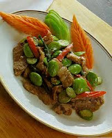

ผัดสะตอใส่กะปิ
เครื่องปรุง
สะตอนำมาแกะเอาเม็ด ประมาณ 1 ถ้วย
หมูสามชั้นหั่นเป็นชิ้นๆ ประมาณ 15 ชิ้น
กะปิอย่างดี ประมาณ 1-2 ช้อน
พริกชี้ฟ้าหั่นยาวๆ ประมาณ 4-5 เม็ด
หอมแดงหั่นหยาบ ประมาณ 3-4 หัว
กระเทียมปอก ประมาณ 7-8 กลีบ
น้ำตาล ประมาณ 1-2 ช้อน
น้ำมะนาว ประมาณ 1-2 ช้อน
น้ำปลา และน้ำมันพืช
1. นำหอม กระเทียมมาโขลกรวมกันกับกะปิให้ ละเอียด ตักมาพักไว้ก่อน
2. กระทะตั้งไฟใส่น้ำมันพืชลงไปพอสมควร
3. ใส่หอมกระเทียมและกะปิที่โขลกลงไปผัดใน กระทะให้หอม แล้ว จึงใส่หมูที่หั่นแล้วลงไปผัดให้เข้ากัน
4. แล้วใส่เม็ดสะตอที่แกะเตรียมเอาไว ผัดรวม กันในกระทะ
5. ใส่น้ำปลา น้ำตาล และ น้ำมะนาว ปรุงรส และผัดให้พอสะตอสุก
6. ก่อนยกลง ให้ใส่พริกชี้ฟ้าหั่นยาวลงไปและ ตักไปรับประทานได้